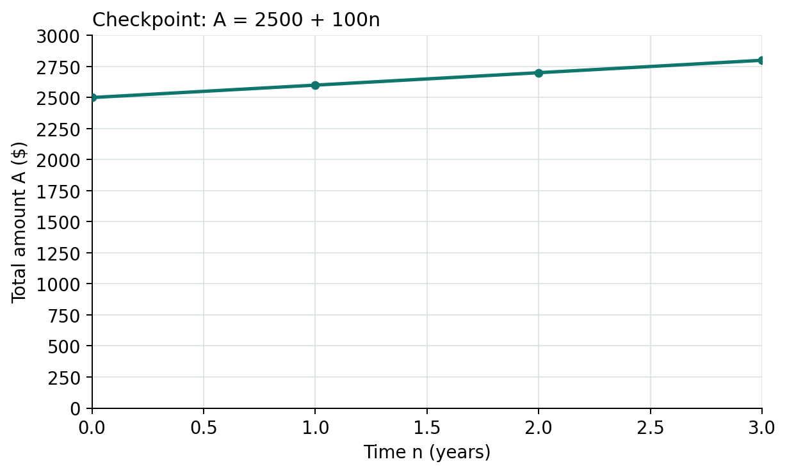
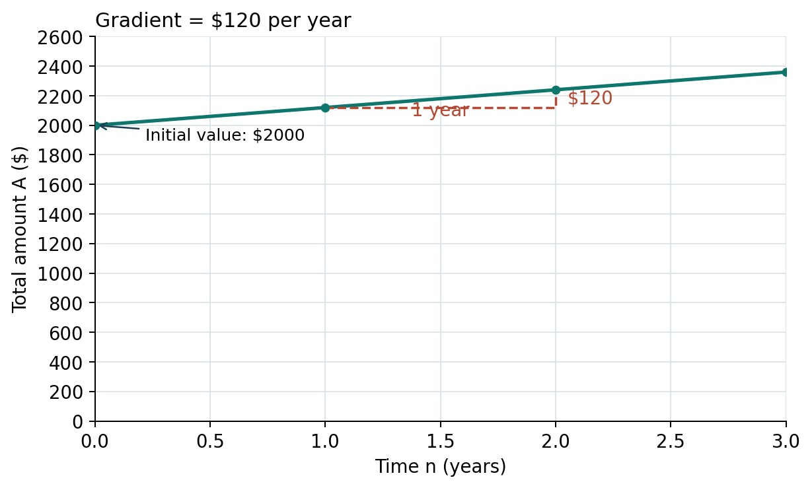

Lesson 6: Representing Simple Interest with Tables and Graphs
Year level: Year 10 (middle ability set)Duration: 60 minutesFocal concept/topic: Initial value, annual rate of change and connections among formula, table and graph | |
Lesson aim: Interpret the graph constructed in Lesson 5 and investigate how a change in the annual rate changes a simple-interest amount rule. Students explain the initial value and gradient in context and connect matching representations. | |
Learning intention: We are learning to interpret simple-interest tables and graphs, explain their initial value and gradient, and predict how changing the annual rate changes the graph. Success criteria: □ I can identify the principal as the amount graph’s initial value. | |
Syllabus outcomes and content: NSW Mathematics K–10 Syllabus (NESA, 2022a).
| Working Mathematically indicators: Teacher-written indicators, linked to activities:
|
ICT:
| LIT:
|
Prerequisite knowledge:
| Resources:
|
Before the lesson:
| |
Labels used in this plan: WM Working Mathematically LIT Literacy ICT Technology AfL Assessment for learning AoL Assessment of learning
Key teacher question → Expected: suggested student response. Self-designed WM indicators are in italics.
Teaching sequence
| Steps & timing | Teaching & learning activities |
|---|---|
| ORIENTATION0–6 minRetrieve the graph already made |
Teacher
Students
Check / support The retrieval establishes that the graph and table are familiar. If a student still confuses I and A, return to the P + I bar before asking about gradient. |
| ENHANCING6–16 minInterpret initial value and gradient |
Teacher
Model / board working
Students
Check / support If students give $240 as the gradient for W1, ask how many years that change covers. “Steeper” is accepted as a comparison only when accompanied by the yearly dollar change. |
| ENHANCING16–34 minICT investigation: change the rate |
Teacher
Model / board working
Students
Check / support Ask each pair to point to a formula cell and a graph feature that supports its claim. If a pair cannot explain the spreadsheet result, return to Pr before extending the investigation. |
| ENHANCING34–44 minMatch representations and explain |
Teacher
Students
Check / support If a student matches only by endpoint, ask them to calculate a yearly difference. Support with a matching frame: “F… matches T… and G… because both start at … and increase by … per year.” |
| ENHANCING44–54 minIndependent checkpoint |
Teacher
Students
Check / support Use the 8-mark guide and criterion record below. Credit correct reasoning after a single arithmetic error where it remains consistent. Record the support used so numerical marks and independence can be interpreted together. |
| SYNTHESIZING54–60 minClose the saving sequence |
Teacher
Students
Check / support Use the checkpoint for the end-of-sequence judgement. Use the exit reasoning to plan a short correction or feedback task before students move to spending contexts. After the lesson
|
Worked solutions
| Task / question | Worked solution |
|---|---|
| R1–R2 | P = $2000. Annual interest is $120. At 2 years, A = 2000 + 120 × 2 = $2240. From year 1 to year 2 the increase is 2240 − 2120 = $120. |
| Gradient model and W1 | (2240 − 2120)/(2 − 1) = 120 dollars per year. W1: (2240 − 2000)/(2 − 0) = 240/2 = 120 dollars per year. Both I = 120n and A = 2000 + 120n increase by $120 per year; their initial values are $0 and $2000 respectively. |
| ICT yearly increase and rules | At P = 2000: 4% gives Pr = $80/year and A = 2000 + 80n; 6% gives $120/year and A = 2000 + 120n; 8% gives $160/year and A = 2000 + 160n. Each starts at $2000. All are linear because P and r are fixed in each model. |
| ICT table: n = 0, 0.5, 1, 1.5, 2, 3 | 4% amounts: $2000, $2040, $2080, $2120, $2160, $2240. 6%: $2000, $2060, $2120, $2180, $2240, $2360. 8%: $2000, $2080, $2160, $2240, $2320, $2480. Interest is each amount minus $2000. |
| ICT hand check and 5% test | At 1.5 years: 4% I = 2000 × 0.04 × 1.5 = $120, A = $2120; 6% I = $180, A = $2180; 8% I = $240, A = $2240. Changing 6% to 5% gives $100/year, A = 2000 + 100n and A = $2200 at n = 2. The starting amount remains $2000. |
| Representations match | F1 matches T2 and G1: each starts at $1500 and adds $60/year. F2 matches T1 and G2: each starts at $1500 and adds $90/year. F2/G2 has the greater gradient. F2 rate = 90/1500 = 0.06 = 6% p.a. |
| E1 | For F1, Pr = 60, so r = 60/1500 = 0.04 = 4% p.a. Check: 1500 × 0.04 = $60 in one year. The coefficient 60 is a dollar increase per year, not a percentage. |
| C1–C2: 3 marks | C1 A = 2500 + 100n. (1) C2 table: (0, 2500), (1, 2600), (3, 2800). (1 for table) Plot these three points on the supplied axes and join with a straight segment for 0 ≤ n ≤ 3. (1) See checkpoint graph. |
| C3: 2 marks | Initial value: $2500, the original principal when no time has elapsed. (1) Gradient: $100 per year, the fixed yearly increase in the total amount. (1) |
| C4: 2 marks | n = 18/12 = 1.5. 120 = 2000 × r × 1.5 = 3000r, so r = 120/3000 = 0.04 = 4% p.a. (1) Check: 2000 × 0.04 × 1.5 = $120. (1) |
| C5: 1 mark | It is linear because the amount increases by the same $100 for every extra year. Interest is based on the fixed original principal. Accept an equivalent explanation of constant change. (1) |
| Exit X1–X2 | X1: both start at $1500. The second has the larger gradient: $90/year rather than $60/year. X2: each rule adds the same dollar amount for every extra year within that model. P and r stay fixed, so the rate of change is constant. |
Worked solutions — C2 checkpoint graph

C2: (0, 2500), (1, 2600), (3, 2800). Join the points with a straight segment for 0 ≤ n ≤ 3. The total amount rises by $100 per year.
Adjustments and anticipated misconceptions
| Anticipated misconception | Why students may think this | How this lesson addresses it |
|---|---|---|
| The amount graph must start at zero. | Students may recall I = 0 at time zero and transfer this to A. | Return to A = P + I and label the existing principal at n = 0. |
| Gradient is the total rise, regardless of time. | Students may subtract two amounts but omit division by the interval. | Compare one-year and two-year intervals on the same line. State dollars per year. |
| 120 in A = 2000 + 120n means 120%. | A coefficient and percentage rate are both described as rates, but have different units. | Label 120 as dollars/year and connect it to Pr. If needed, calculate r = 120/2000 = 6%. |
| A larger annual rate changes the starting value or makes the graph curved. | Students may mix the principal with the increase, or assume all interest is compounded. | Hold P fixed, predict before changing r, and check the common point (0, 2000) and equal differences. |
| A larger final amount proves a larger percentage rate. | The initial principal may be overlooked when comparing graphs. | If this comparison arises, use the Lesson 4 extension to distinguish P, Pr and r. This is a comparison of mathematical relationships. |
Adjustments
| Students who need… | Adjustment |
|---|---|
| More support | Use the corrected Lesson 5 graph, prelabelled axes and a labelled rise/run triangle. Provide a partly completed table and sentence frame. Pair a recorder with a device operator, then swap. The paper fallback uses the same values and scale. |
| More challenge | E1 recovers the percentage rate from the rule and verifies it. Ask students to explain why the same annual interest can come from different P/r pairs. Keep fees, product conditions and graph intersections outside the core. |
| Language / EAL/D | Keep a word bank with initial value, gradient, linear and per year beside the annotated graph. Rehearse explanations orally before writing and allow home-language notes (NESA, 2022b). |
| Access and assessment | Provide large printed axes and keyboard-friendly cells. For a documented access need, supply a plotted graph for annotation or record an oral interpretation; record the adjustment with the checkpoint evidence. Do not prompt a mathematical solution during the independent checkpoint. |
Vocabulary
| Term | Definition | Image |
|---|---|---|
| Initial value | The amount when n = 0. For an amount graph, it is the principal P. | Annotated graph below |
| Gradient / rate of change | Change in amount divided by change in time. With n in years, the unit is dollars per year. | Annotated graph below |
| Linear | The amount changes by equal increments for equal time intervals, so the graph is a straight line. | Annotated graph below |
| Coefficient of n | The number multiplying n. In A = 2000 + 120n, 120 is the yearly dollar increase Pr. | Annotated graph below |
| Representation | A way to show a relationship, such as a rule, table or graph. | Annotated graph below |
| Annual percentage rate | The yearly interest as a percentage of the principal. It differs from the dollar increase Pr. | Annotated graph below |

Visual: prepared for these lessons. It connects the words to quantities, units or a mathematical operation.
Sources acknowledged in this lesson
The simple-interest representation connects to Palmer et al. (2024), Section 1F, p. 41. All investigation values, matching cards, graphs and checkpoint questions are prepared for these lessons. The workbook uses the same mathematical relationships as the paper task.
- Ainsworth, S. (2006). DeFT: A conceptual framework for considering learning with multiple representations. Learning and Instruction, 16(3), 183–198. https://doi.org/10.1016/j.learninstruc.2006.03.001
- Black, P., & Wiliam, D. (1998). Assessment and classroom learning. Assessment in Education: Principles, Policy & Practice, 5(1), 7–74. https://doi.org/10.1080/0969595980050102
- NSW Education Standards Authority. (2022a). Mathematics K–10 syllabus. https://curriculum.nsw.edu.au/learning-areas/mathematics/mathematics-k-10-2022/content/stage-5/facb3aa952
- NSW Education Standards Authority. (2022b). Vocabulary and language in Mathematics 7–10 [Support material]. https://curriculum.nsw.edu.au/file/0e513738-cc88-4ff1-9984-ef0b842faf18/mathematics-7-10-supporting-language-and-vocabulary.docx
- NSW Education Standards Authority. (2023). Working mathematically [Support material]. https://curriculum.nsw.edu.au/file/8df2e359-1b23-4507-b382-74a8a880317c/elaborating-on-working-mathematically-k-10.docx
- Palmer, S., McDaid, K., Greenwood, D., Woolley, S., Goodman, J., & Vaughan, J. (2024). CambridgeMATHS NSW Stage 5 – Core and Standard Paths Year 10 (3rd ed.). Cambridge University Press & Assessment.